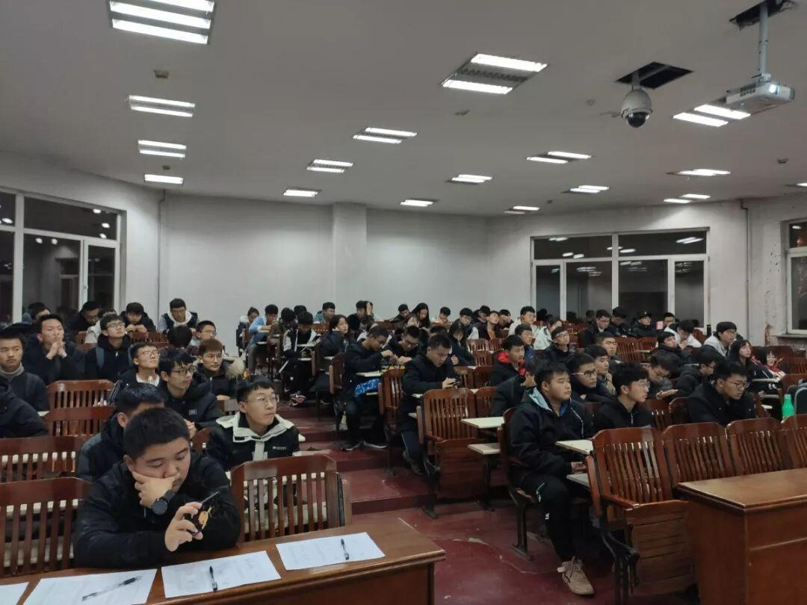
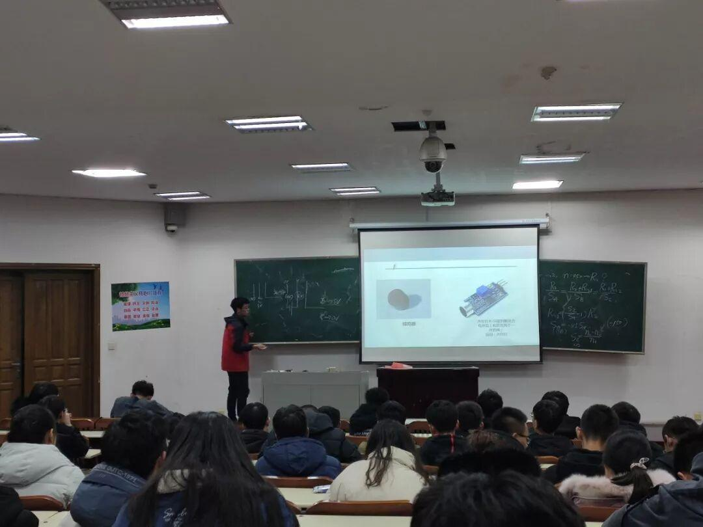

第四次教学|传感器'贼'带感
电协第四次教学总结
不知不觉,大家在电协已经接受了四次教学,认知了单片机Arduino、蓝牙小车、舵机、以及这次教学的传感器和按键输出，相信大家已经逐渐了解了电协，爱上了电协的教学，相信有学长们毫无保留的讲解以及大家在课余时间的积极学习，在不远的未来大家都会成为大神！
本次教学的开始--讲解按键输出又称按键开关,大家学习了两个多月的c语言,对于轻触开关的程序应该是没太大问题。(如果有问题,千万别和学长学姐们客气,热心的学长学姐们会孜孜不倦为你解答)。

传感器-高低电平输出型、原始数据输出型。学长学姐给大家充分的介绍了各式各样的传感器，以及应用。大家课下的时候也要做好复习。

友情提示：准备参加理工杯的同学，要好好的了解比赛规则。